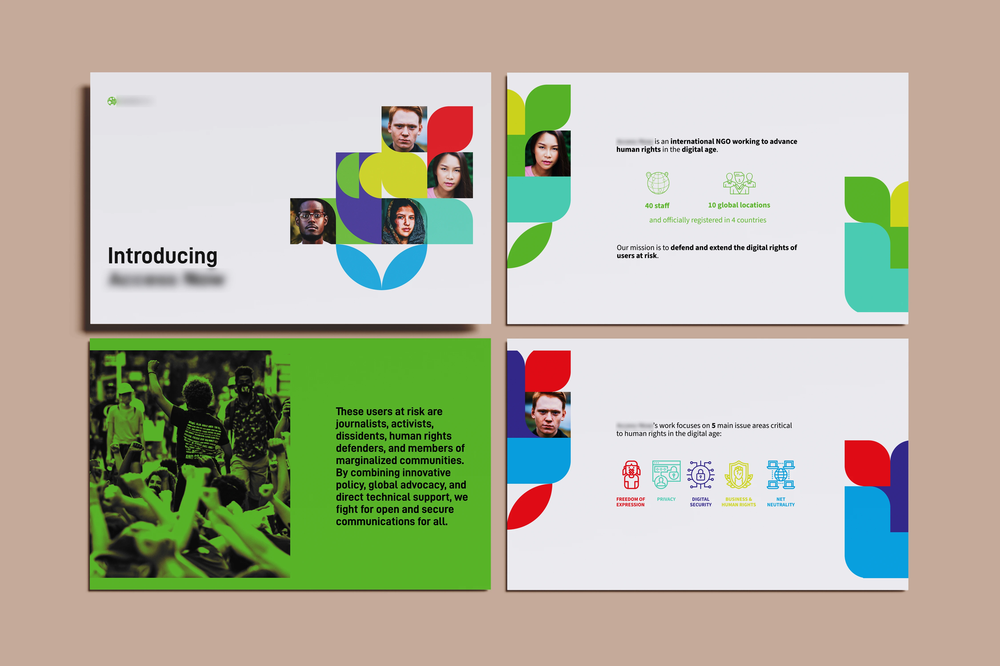
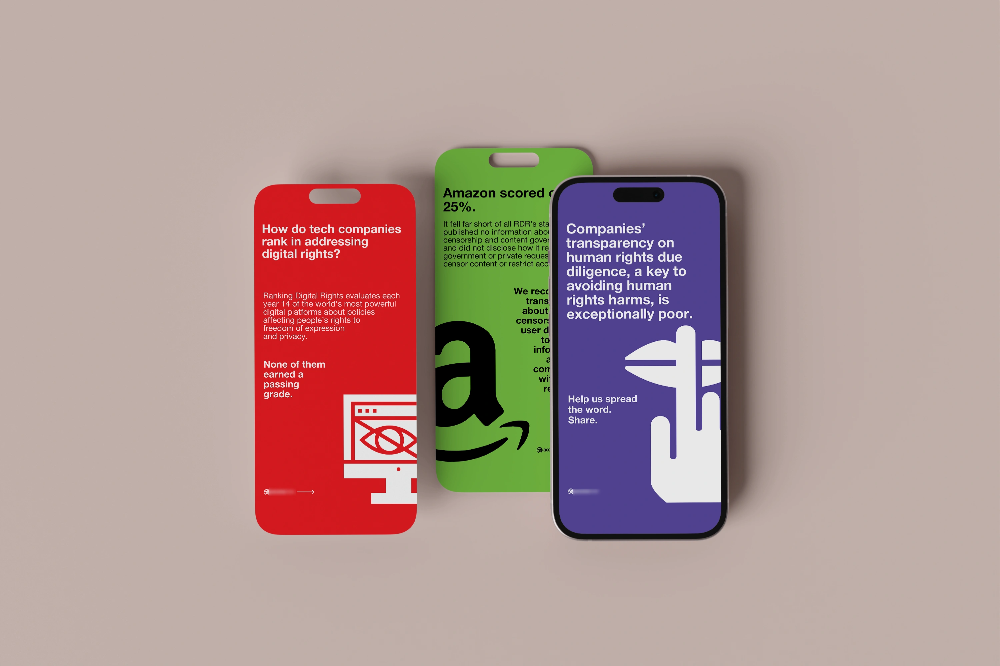

INTRO
Il progetto riguardava la creazione di contenuti digitali per un’organizzazione internazionale che si occupa di difendere i diritti digitali delle comunità a rischio. L’obiettivo era presentare ricerche recenti e classifiche sulle performance delle aziende tech nel rispetto dei diritti digitali, attraverso una presentazione e storie Instagram statiche. Il target principale erano attivisti, professionisti del settore e organizzazioni non-profit.
Il progetto riguardava la creazione di contenuti digitali per un’organizzazione internazionale che si occupa di difendere i diritti digitali delle comunità a rischio. L’obiettivo era presentare ricerche recenti e classifiche sulle performance delle aziende tech nel rispetto dei diritti digitali, attraverso una presentazione e storie Instagram statiche. Il target principale erano attivisti, professionisti del settore e organizzazioni non-profit.

LA SFIDA
Il progetto presentava diverse sfide legate alla selezione e alla sintesi delle informazioni. La complessità dei dati e la necessità di comunicare concetti tecnici a un pubblico eterogeneo richiedevano un approccio minimalista e accessibile. Lavorare con le brand guidelines esistenti ha reso possibile garantire la coerenza, sviluppando uno stile che fosse visivamente chiaro e comunicativo, in modo da valorizzare i dati chiave senza appesantire la composizione grafica.
Il progetto presentava diverse sfide legate alla selezione e alla sintesi delle informazioni. La complessità dei dati e la necessità di comunicare concetti tecnici a un pubblico eterogeneo richiedevano un approccio minimalista e accessibile. Lavorare con le brand guidelines esistenti ha reso possibile garantire la coerenza, sviluppando uno stile che fosse visivamente chiaro e comunicativo, in modo da valorizzare i dati chiave senza appesantire la composizione grafica.

LA SOLUZIONE
Nella presentazione è stato adottato uno stile moderno e pulito, con elementi geometrici che richiamano la tecnologia. Sono stati utilizzati primi piani di persone di diverse etnie, all'interno di forme geometriche, per riflettere il focus inclusivo dell'organizzazione. Le storie Instagram, invece, presentano un layout semplice, che dà ampio spazio ai dati e utilizza loghi e icone per facilitare la comprensione visiva. L'uso di spazi negativi evita il sovraccarico delle immagini e mantiene l'attenzione sulle informazioni chiave.
Nella presentazione è stato adottato uno stile moderno e pulito, con elementi geometrici che richiamano la tecnologia. Sono stati utilizzati primi piani di persone di diverse etnie, all'interno di forme geometriche, per riflettere il focus inclusivo dell'organizzazione. Le storie Instagram, invece, presentano un layout semplice, che dà ampio spazio ai dati e utilizza loghi e icone per facilitare la comprensione visiva. L'uso di spazi negativi evita il sovraccarico delle immagini e mantiene l'attenzione sulle informazioni chiave.
RISULTATO
Il progetto ha contribuito a rafforzare l’identità visiva dell’organizzazione e a comunicare in modo efficace informazioni complesse attraverso un design minimalista e professionale. Grazie a una presentazione chiara e a storie Instagram accattivanti, il risultato è stato un aumento dell’interesse del pubblico per le ricerche pubblicate. La struttura visiva e l’uso mirato di immagini e dati hanno ricevuto feedback positivi, posizionando l’organizzazione come una risorsa autorevole e accessibile nel panorama dei diritti digitali.
Il progetto ha contribuito a rafforzare l’identità visiva dell’organizzazione e a comunicare in modo efficace informazioni complesse attraverso un design minimalista e professionale. Grazie a una presentazione chiara e a storie Instagram accattivanti, il risultato è stato un aumento dell’interesse del pubblico per le ricerche pubblicate. La struttura visiva e l’uso mirato di immagini e dati hanno ricevuto feedback positivi, posizionando l’organizzazione come una risorsa autorevole e accessibile nel panorama dei diritti digitali.
